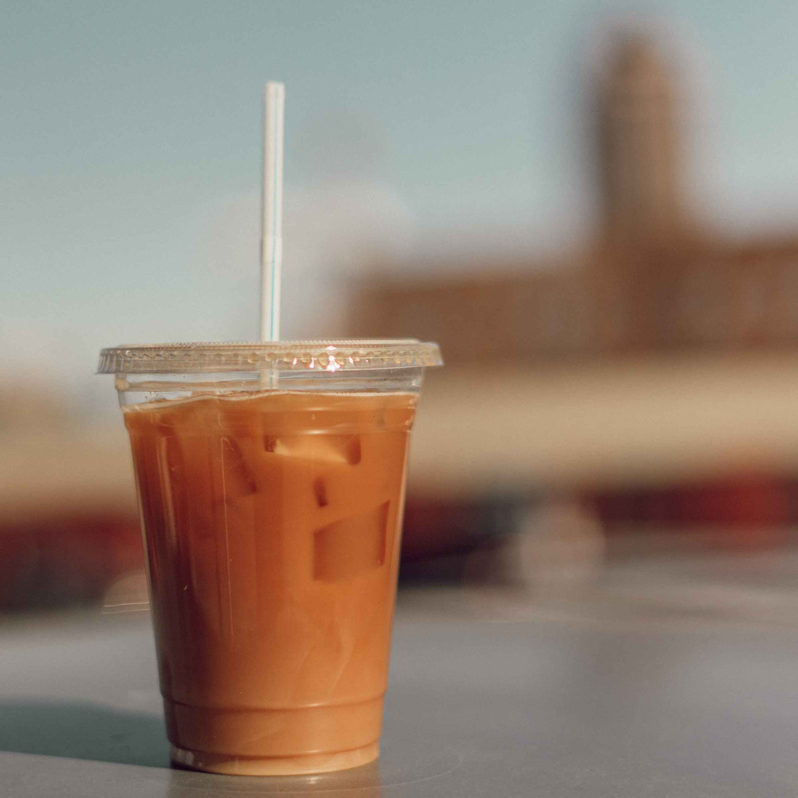

Cold Brew Coffee
I'm relatively new to coffee drinking, but have graduated from instant to actual brewed liquid energy. I was intrigued when I read about cold brewing and how it can make a smoother beverage with more kick. So I gave it a try and I am a convert. Any leftovers can be stored in the fridge, or made into ice cubes.
